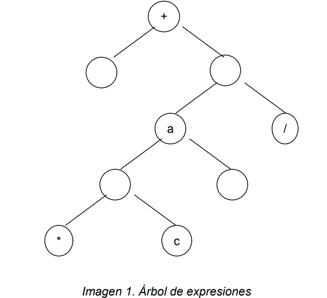

Unidad 1
Análisis semántico
El análisis semántico es el estudio del significado de las palabras, frases y oraciones, y cómo se relacionan entre sí. Se enfoca en la interpretación del contenido, el contexto y la comprensión del lenguaje natural. En esencia, busca entender qué significa algo, más allá de la simple estructura gramatical.
El análisis semántico es una tarea compleja porque:
- El lenguaje natural es ambiguo: Una palabra o frase puede tener varios significados, dependiendo del contexto.
- El significado no siempre es explícito: A veces, el significado se infiere a través de la relación entre palabras, frases y el conocimiento del mundo.
- La comprensión humana es intuitiva: Los humanos no suelen analizar el lenguaje de forma lógica, sino que lo interpretan de forma natural.
1.1 Árboles de Expresiones
Los árboles de expresión son estructuras jerárquicas que representan las expresiones matemáticas o lógicas de un lenguaje de programación. Cada nodo del árbol corresponde a un operador, y las hojas del árbol corresponden a los operandos (valores, variables, literales, etc.).
Detalles:
- Propósito: Un árbol de expresión es utilizado para representar las operaciones de una expresión en una estructura fácil de manejar. Permite realizar optimizaciones y evaluaciones semánticas de manera eficiente.
- Operadores: Cada nodo del árbol puede ser un operador (por ejemplo, +, -, *, / en expresiones aritméticas), y las ramas del árbol representan las relaciones entre los operadores y sus operandos.
- Evaluación: Durante la evaluación de una expresión, el compilador recorrerá el árbol de expresión para calcular el valor correspondiente. Los árboles de expresión pueden ser utilizados también en la generación de código intermedio.
